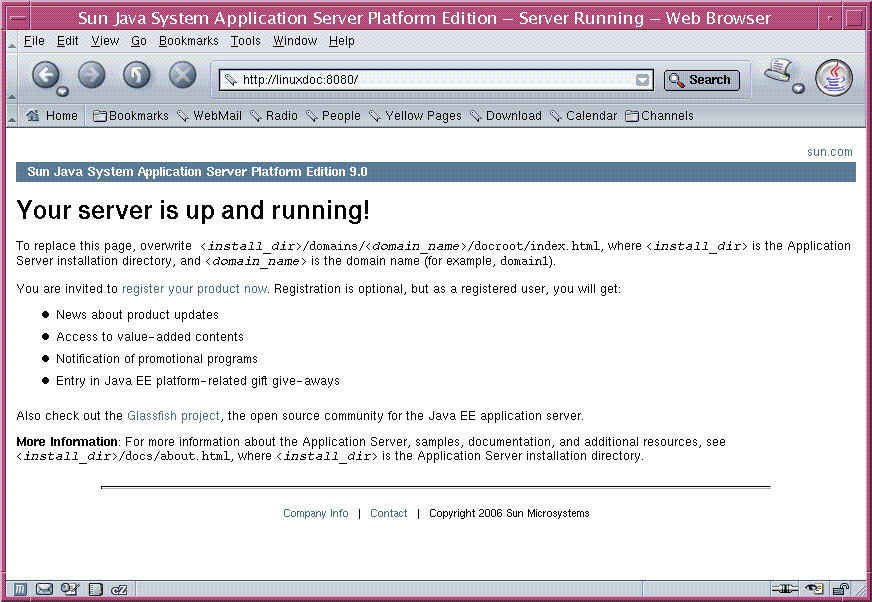
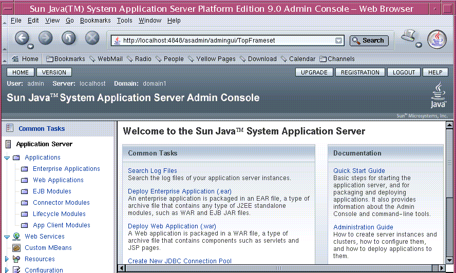

To Start the Application Server on Linux and Solaris
To Start the Application Server on Linux and SolarisWelcome to the Quick Start Guide. This guide describes basic steps for starting the Sun Java™ System Application Server software, (henceforth referred to as Application Server), and packaging and deploying applications. It also provides information about the Admin Console and command-line tools. You must have already installed the product to use this Quick Start Guide. For more information, see Sun Java System Application Server Platform Edition 9.0 Installation Guide.
The intended audience for this guide is the system administrator, network administrator, Application Server administrator, and developer who is interested in learning the basics about Application Server software.
Note - For the latest version of this document, see the Sun Java System Application Server Platform Edition 9.0 Quick Start Guide posted at docs.sun.com.
This document contains information about the following topics:
For information about conventions used in this document, see Documentation Conventions.
This section provides procedures for administrators who want to start and verify the Application Server software:
For administration tasks, the Application Server software provides these tools, which enable administrators to manage server instances:
The Admin Console, a browser-based graphical user interface (GUI)
The asadmin utility, a command-line tool
To Start the Application Server on Linux and SolarisYou may have already started the server when you installed, using the Start Server button on the last installation screen. However, if your server is not running, start it using the steps below.
You start the server by starting the domain. A domain provides authentication and administration for the server instance that belongs to it. Starting the domain starts the server instance in the domain. A default domain called domain1 is created when you install Application Server.
Note - If you are using the Application Server that comes bundled with the Solaris operating system, no default domain is created. Instead, you must create one using asadmin create-domain. See the documentation for create-domain(1) for more information.
Add the install-dir/bin/ directory to the PATH environment variable.
Start the server by entering this command: asadmin start-domain domain1.
When the server has started, this message appears: Domain domain1 is ready to receive client requests. Additional services are being started in the background.
To Start the Application Server on WindowsYou may have already started the server when you installed, using the Start Server button on the last installation screen. However, if your server is not running, start it using the steps below.
From the Start menu, choose Programs => Sun Microsystems => Application Server PE=> Start Default Server.
A command window appears showing initialization messages. When the server has started, this message appears: Domain domain1 is ready to receive client requests. Additional services are being started in the background.
Press any key to dismiss the command window.
You can also use the asadmin start-domain domain1 command to start the server. Before using asadmin, see To Configure the Windows Environment to Use the Command-Line Tools.
To Confirm That the Server Is RunningTo verify that the server is running on your system, click this URL: http://localhost:8080.
The URL has two parts:
localhost is used if the both the browser and the Application Server are running on the same system. If the Application Server is running on another system, substitute the name of that system in the URL.
The default port number is 8080. If you changed the port number during installation, use that number in your browser's address field instead.
You should see the server Welcome page, shown below.
This page might take a few seconds to appear.
When you see this page, you know that the server is running. If the server is not running, but your system is operating normally, you get a server not found error. (In some browsers, that error automatically launches a search engine.) For other problems, check your server and browser settings, as described in the Sun Java System Application Server Platform Edition 9.0 Troubleshooting Guide.
To Deploy the Hello Application Using AutodeployThe server installation includes a pre-packaged application that says "Hello," taken from The Java EE 5 Tutorial. The Hello application is contained in a Web ARchive (WAR) file in the samples directory. Packaged applications can also be in the form of a Java™ ARchive (JAR) or Enterprise ARchive (EAR) file.
Dragging or copying to a domain's autodeploy directory lets you put a pre-packaged application into use immediately, with minimal effort.
Find install-dir/samples/quickstart/hello.war.
Copy it to install-dir/domains/domain1/autodeploy/.
Tip - On Windows, you can create a shortcut to the autodeploy directory on your desktop, and then drag and drop the hello.war file onto the shortcut.
When the server has finished deploying the application, it creates a file named hello.war_deployed in the autodeploy directory. Depending on the speed of your system, the process can take a few seconds. Until that file appears, a 404-File Not Found error occurs when you try to visit the application page.
Access this URL to visit the application page: http://localhost:8080/hello.
You see the application's first page, which prompts you to fill in your name:

Type your name and click Submit.
The application displays a customized response, giving you a personal Hello.
Note - You can also use the asadmin command-line utility to deploy from the command line or in a shell script. The command is asadmin deploy. For more information, see the deploy command documentation in the Sun Java System Application Server Platform Edition 9.0 2006Q1 Reference Manual
Other deployment methods are discussed later in the Guide in To Deploy From the Admin Console, and To Deploy From a Development Directory. It is also possible to dynamically reload changes to your application. For more information, see "Dynamic Reloading" in Sun Java System Application Server Platform Edition 9.0 Application Deployment Guide.
To Log In to the Admin ConsoleThe Admin Console is a web-based interface that simplifies a variety of administration and configuration tasks. It is commonly used to:
Deploy and undeploy applications
Enable and disable applications
Identify which applications are currently running
Configure Java Database Connectivity (JDBC™) resources and other server settings
Select and view recent entries in the log file
For further information about using the Admin Console, consult the online help or the Sun Java System Application Server Platform Edition 9.0 Administration Guide.
Access http://localhost:4848/.
localhost is used if the both the browser and the Application Server are running on the same system. If the Application Server is running on another system, substitute the name of that system in the URL.
4848 is the Admin Console's default port number. If you changed the port number during the installation, use that number instead.
Tip - Windows users can also use the Start menu option: Programs => Sun Microsystems => Application Server PE =>Admin Console.
Enter the administration user name and password, specified when you installed the product.
Click Log In.
When the Admin Console appears, it looks like this:
Use the items in the tree to configure a variety of operational settings for Application Server software. Launch online help from the button in the upper right corner.
To see the server's log file, click Search Log Files under the Common Tasks heading in the right pane. When the Log Viewer window appears, set criteria and click Search to display status messages from the server and output from your Java EE application.
You have successfully completed the first section of the Quick Start Guide. You started the Application Server, deployed the Hello application, and viewed the Admin Console. To continue with the Quick Start tasks, go on to Packaging and Deploying Applications.
Before applications can be deployed, they must be packaged into Java ARchive (JAR), Web ARchive (WAR), or Enterprise ARchive (EAR) files. The packaged application includes deployment descriptors, which give the Application Server software the information it needs to load the application, map a URL to it, and connect it to the resources it uses. This section describes the following techniques for packaging and deploying applications:
For more information, see "Getting Started With Web Applications" in The Java EE 5 Tutorial.
NetBeans™ IDE is an Integrated Development Environment you can use to create, package, and deploy complex Java EE applications. The NetBeans IDE is available for download from http://www.netbeans.org. NetBeans IDE integrates the development environment with the deployment environment, and automates many steps for producing Java EE applications. Once you register the Application Server with the NetBeans IDE, you can easily deploy applications, make changes, and redeploy them.
For more information on NetBeans IDE, see the documentation at: http://www.netbeans.org.
To Package the Hello Application Using asantIf applications are not packaged with a tool such as NetBeans IDE, you can use the asant utility shipped with the product. The asant utility is used to automate repetitive deployment tasks. It is a shell script that initializes the Application Server environment and launches the Jakarta Ant tool. For more information on the asant utility, see the Sun Java System Application Server Platform Edition 9.0 2006Q1 Reference Manual.
The Hello application deployed earlier was already packaged into a WAR file. This section covers packaging the application's components into another WAR file. The build.xml file included with the Hello application contains the build targets.
If you have not already added install-dir/bin to your PATH environment variable, do so now.
Go to install-dir/samples/quickstart/ directory.
Type asant war.
This command assembles the WAR file for the application in install-dir/samples/quickstart/build/assemble/war.
To Deploy From the Admin ConsoleNow that you have packaged the Hello application, you can deploy it. The following section discusses deploying the Hello application using the Admin Console. You can also deploy using asant. For more information, see Chapter 3, "The asant Utility," in Sun Java System Application Server Platform Edition 9.0 Developer's Guide and Sun Java System Application Server Platform Edition 9.0 2006Q1 Reference Manual.
Click http://localhost:4848/asadmin.
localhost is used if the both the browser and the Application Server are running on the same system. If the Application Server is running on another system, substitute the name of that system in the URL.
4848 is the Admin Console's default port number. If you changed the port number during the installation, use that number instead.
Enter the admin user name and password.
In the left pane, click the Applications node to expand it.
Click Web Applications.
If you already have a Hello application deployed, undeploy it now by selecting the checkbox next to it and clicking Undeploy.
To deploy the newly assembled Hello application, on the Web Applications page, click Deploy.
Select the Package file to upload to the Application Server option and click Browse.
Navigate to the install-dir/samples/quickstart/build/assemble/war directory and select hello.war.
Click Next.
On the Deploy Web Module page, click OK.
The application appears in the Web Applications list.
To verify that it was deployed properly, click Launch.
To Deploy From a Development DirectoryYou can deploy an application directly from a development directory, if the appropriate directory hierarchy and deployment descriptors have been created. Because the process is complex for non-trivial applications, it is a procedure that is recommended only for advanced users, or simple applications. But when it is feasible to do so, deploying directly from a directory can speed up the development cycle.
The process can be performed interactively by using the Admin Console, or by using asadmin deploydir from the command line or in a script. The steps for the command line are presented here, because most developers want to automate the procedure in command scripts.
Note - Before using asadmin on Windows, see To Configure the Windows Environment to Use the Command-Line Tools.
In the install-dir/samples/quickstart/ directory, create a new directory called hello2/.
Unzip the contents of the hello.war file into the hello2/ directory.
Preserve the directory structure of the hello.war file when you unzip it. It is a template for the kind of file structure you need to deploy directly from a directory.
If you already have a Hello application deployed, undeploy it now using the command asadmin undeploy hello at the command line.
Issue the following command to deploy the application:
asadmin deploydir install-dir/samples/quickstart/hello2
Note - Specify the full path to the hello2/ directory.
If you did not install the Application Server with the "Don't prompt" option, also specify the option --user username, where username is the admin user name. You are prompted for the administration password.
The following message appears: Command deploydir executed successfully.
Verify that the application is running by going to this URL: http://localhost:8080/hello.
You have completed the second section of the Quick Start Guide. See Using Command-Line Tools for more information on the command-line tools available inApplication Server. See Where to Go Next for information on other resources for learning about Application Server.
The Application Server software offers a variety of command-line tools for performing administrative functions, in addition to the Admin Console. This section explains what command-line tools are available.
To launch a tool, type the name of the tool in a command window. This table lists tools by name in the first column and describes them in the second column.
Table 1 Command-Line Tools
Name of Tool | Description |
|---|---|
appclient | Launches the Application Client Container and invokes the client application packaged in the application Java archive (JAR) file. |
asadmin | Application Server administration tool for configuring the Application Server software. |
asant | Launches the Jakarta Ant tool, so that you can automate repetitive development and deployment tasks. |
asapt | Compiles Java sources with Java EE annotations. The tool automatically invokes the wsimport command. |
asupgrade | Application Server administration tool for upgrading the Application Server software. |
capture-schema | Extracts schema information from a database and produces a schema file that the server can use for Container Managed Persistence (CMP). |
jspc | Compiles JSP pages. |
package-appclient | Packages the application client container libraries and JAR files. |
verifier | Validates the Java EE deployment descriptors with the DTDs. This tool also provides a graphical user interface. To see the GUI, specify the -u option. Some Windows systems launch a driver verifier utility with the same name. To launch the Application Server verifier, you must be in the install-dir/bin directory. |
wscompile | Takes the service definition interface and generates the client stubs or server-side skeletons for JAX-RPC; or generates a Web Services Description Language (WSDL) description for the provided interface. |
wsdeploy | Generates an implementation-specific, ready-to-deploy WAR file for web services applications that use JAX-RPC. |
wsgen | Reads a web service endpoint class and generates all the required artifacts for web service deployment and invocation. |
wsimport | Generates JAX-WS portable artifacts, such as service endpoint interfaces (SEIs), services, exception classes mapped from the wsdl:fault and soap:headerfault tags, asynchronous response beans derived from the wsdl:message tag, and JAX-B generated value types. |
To Configure the Windows Environment to Use the Command-Line
ToolsFrom the Explorer window or desktop, right-click My Computer.
Choose Properties to display the System Properties dialog.
Click the Advanced tab.
Click Environment Variables.
In the User variables section, add or update the PATH variable.
If a PATH variable exists:
Click Edit.
In Variable Value, enter the path to the server's bin directory, separated from other entries by a semicolon. For example:
install-dir/bin;other_entries
If a PATH variable is not present:
Click New.
In Variable Name, type PATH.
In Variable Value, type the path to the server's bin directory:
install-dir/bin
In the User variables section, add the environment variable AS_ADMIN_USER and set it to the administrative user name that you assigned during installation.
If you set this variable, you do not need to enter the administrative user name when you run asadmin commands.
Note - If you installed the server with the "Don't Prompt for Admin User Name" option selected, you do not need to create the AS_ADMIN_USER variable.
Click OK to commit the change and close the remaining open windows.
Other resources for learning about and using Application Server are available. They include the following:
The server's Installation Complete page at install_dir/docs/about.html.
See this document for the latest information on what is new, and pointers to tutorials and other educational services.
Sun Java System Application Server Platform Edition 9.0 Release Notes
See this document for late-breaking changes and other information regarding this release.
Sun Java System Application Server Platform Edition 9.0 Administration Guide.
See this guide for information on performing administrative functions using the Admin Console.
Sun Java System Application Server Platform Edition 9.0 Application Deployment Guide
See this guide for information on assembling and deploying applications.
Sun Java System Application Server Platform Edition 9.0 2006Q1 Reference Manual (man pages)
See this document for reference information on Application Server command-line utilities, such as asadmin.
The Java EE 5 Tutorial (http://java.sun.com/javaee/5/docs/tutorial/doc/index.html)
See this document for a tutorial that covers the process for building and deploying Java™ Platform, Enterprise Edition (Java™ EE platform) applications.
See this web site for a comprehensive set of examples that demonstrate operations of the Application Server software and that can be used as application templates.
See this site to download the NetBeans IDE and view the documentation, including installation instructions and Quick Start Guides.
See this site for information on the open source Java EE 5 Application Server.
This section describes the types of conventions used throughout this guide.
The following general conventions are used in this guide:
File and directory paths are given in UNIX® format (with forward slashes separating directory names). For Windows versions, the directory paths are the same, except that backslashes are used to separate directories.
Installation root directories for most platforms are indicated by install-dir in this document.
By default, the location of install-dir on most platforms is:
Solaris bundled version:
/usr/apserver
Other Solaris and Linux installations, non-root user:
user's home directory/SUNWappserver
Other Solaris and Linux installations, root user:
/opt/SUNWappserver
Windows, all installations:
system drive:\\Sun\\AppServer
Domain root directories are indicated by domain-dir in this document, which by default is an abbreviation for the following:
Solaris bundled version:
/var/appserver/domains/ |
All other versions:
install-dir/domains/ |
However, for Solaris bundled installations, the directory containing all the domains can be changed to another directory during installation.
In configuration files, you may see domain-dir represented as follows:
${com.sun.aas.instanceRoot}
|
The following table describes the typographic changes that are used in this document.
Table 2 Typographic Conventions
Typeface | Meaning | Example |
|---|---|---|
AaBbCc123 | The names of commands, files, and directories, and onscreen computer output | Edit your .login file. Use ls -a to list all files. machine_name% you have mail. |
AaBbCc123 | What you type, contrasted with onscreen computer output | machine_name% su Password: |
AaBbCc123 | A placeholder to be replaced with a real name or value | The command to remove a file is rm filename. |
AaBbCc123 | Book titles, new terms, and terms to be emphasized (note that some emphasized items appear bold online) | Read Chapter 6 in the User's Guide. A cache is a copy that is stored locally. Do not save the file. |